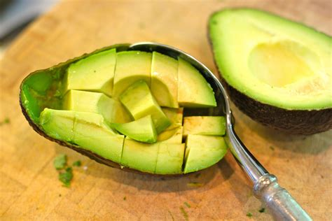

World's Healthiest SuperFoods! :)
- Lemons
- Broccoli
- Dark Chocolate
- Potatoes
- Salmon
|
Walnuts
Avocados
Garlic
Spinach
Lentils
|

11 tips and tricks to help you get started in the kitchen! :)
- Peel ginger with a spoon.
- Get an immersion blender.
- Keep a small strainer for citrus.
- Use that same small strainer for eggs.
- Freeze liquids in useable portions and freeze as flat as possible.
- Defront meat on aluminum trays.
- Partially freeze meat before cutting.
- Slice avocados in their skins.
- Use a spoon to scoop out the avocados
- Keep your knives sharp.
- Store greens and herbs with a damp paper towel.
* * *
for more tips and tricks, click here !